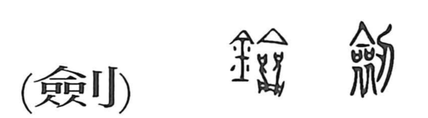

剣

Kun: tsurugi | On: ken
sword ・ double-edged sword
Explanation
剣, formerly 劍, combines 刀, a blade, with the sound element 僉. Early sword inscriptions could use 僉 alone for the weapon; the blade element makes that meaning explicit.
剣 names the double-edged sword worn at the waist, called tsurugi in Japanese. Both sides of its blade can cut, in contrast to the single cutting edge of 刀. From the weapon itself, the character also names its use in cutting or thrusting and the skill of swordsmanship. Wearing such a sword marked the bearer’s status; permission to enter a ruler’s hall while still wearing it could be a special honour.